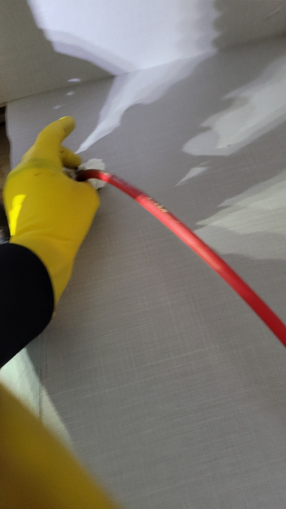
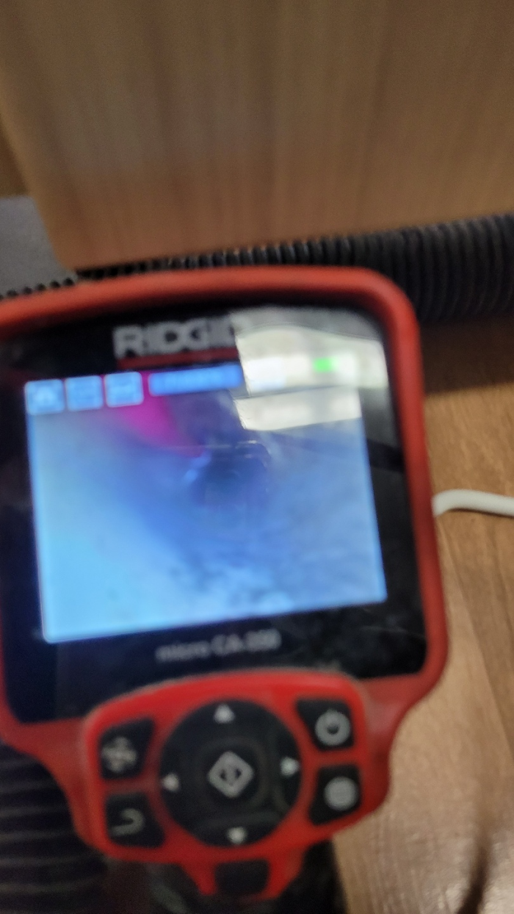
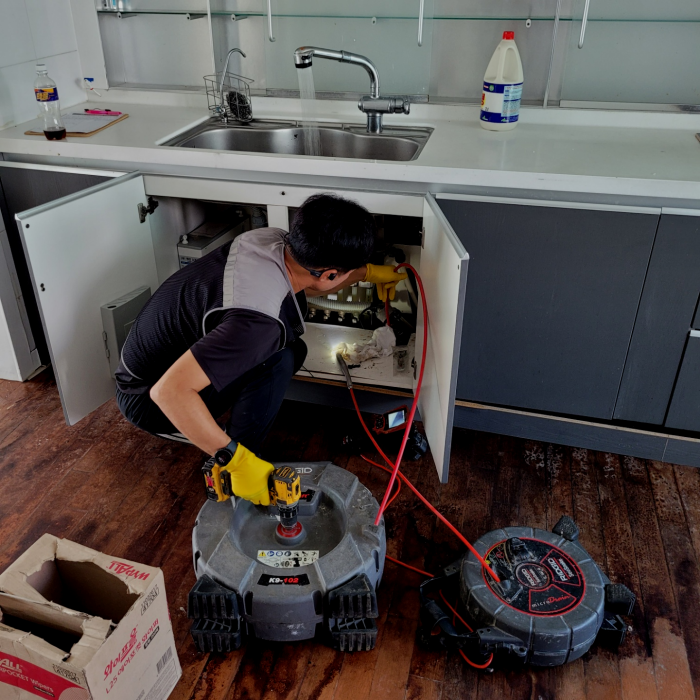
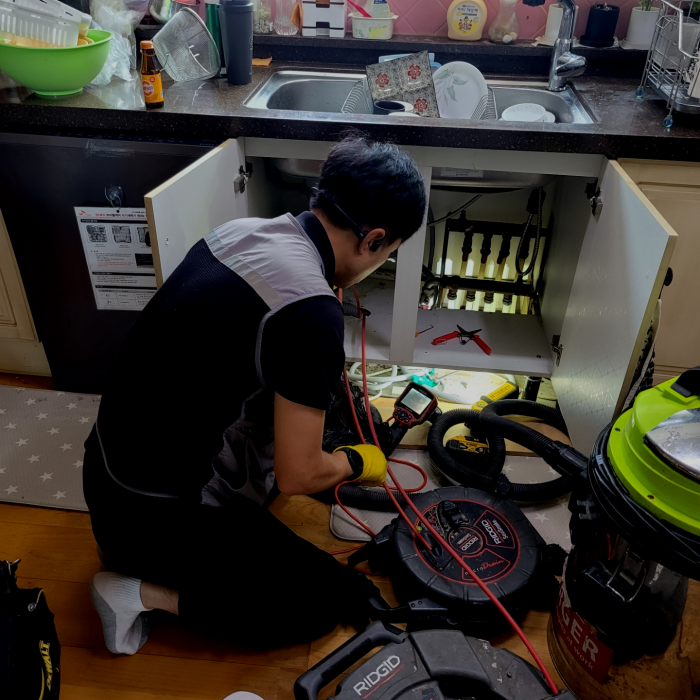
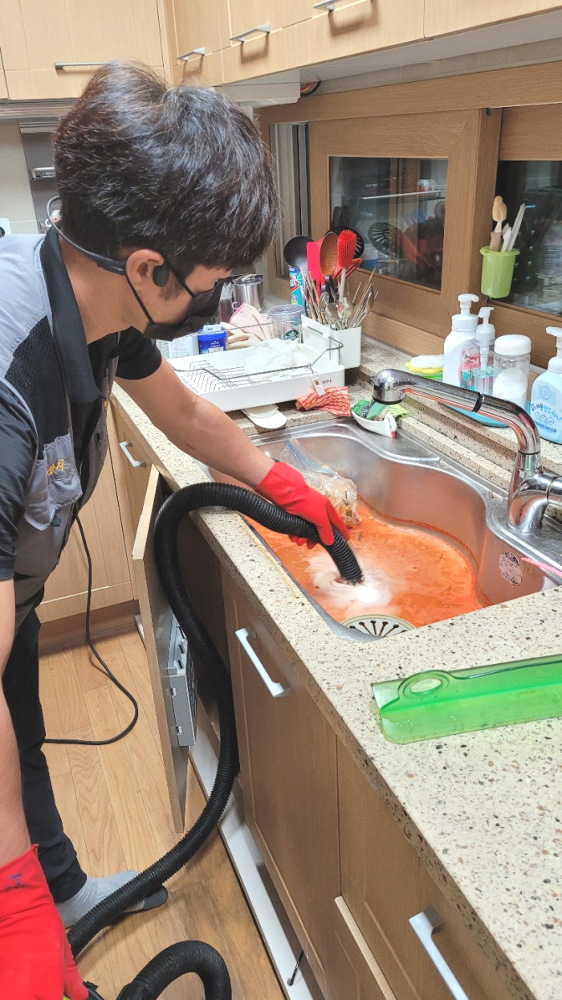
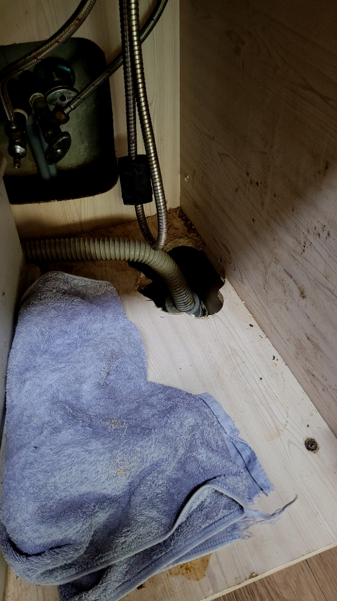

🏠 성남 판교 씽크대막힘 운중동 삼평동 배관역류 누수탐지 설비공사
성남 싱크대막힘 전문 시공 후기

📋 작업 개요
- 위치: 성남
- 서비스 유형: 싱크대막힘, 변기막힘, 하수구막힘, 배관막힘, 집수정막힘, 누수수리, 역류해결, 뚫는업체, 배관청소, 설비공사, 배관보수
- 작업 일시: 2024. 2. 14. 15:15
- 업체명: 하수구수사대 (010-5615-2118)
🔍 문제 상황
안녕하십니까^^
설비전문업체 "하수구수사대"를 찾아주셔서 고맙습니다.
집이나 사무실에서 퇴수구가 막혀버리면, 일상 생활이나 업무에 큰 불편함이 따르게 됩니다. 배수가 잘 되지 않으면, 목욕이나 설거지 같은 일상 활동에 지장이 생기고, 퇴수구가 역류하는 경우에는 상황이 더욱 심각해질 수 있습니다. 이런 문제를 미리 예방하기 위해서는 꾸준한 청소와 유지보수가 필요하다는 것이죠.

🔎 원인 분석
💡 전문가 진단: 성남 판교 씽크대막힘 운중동 삼평동 배관역류 누수탐지 설비공사
성남 판교 씽크대막힘 운중동 삼평동 배관역류 누수탐지 설비공사
그렇기에 신속하게 배관업체에 문의하시는 것이 좋으며 과도하게 기다란 물체를 집어넣는 행위들은 배관이 금 가거나 누수 등의 다른 사고로 번지는 경우도 생깁니다. 그렇기에 깔끔한 마무리를 위해서는 혼자 해결하시는 것보다는 배관기술자의 시공을 받으시길 바랍니다.
전문적인시공능력과 그에맞는배수장비 이부분을모두 채워줄수있는업장에 공사진행요청하는것이 합리적입니다. 배수막힘이 발생한 원인지점에 사용가능한 장비를소지하고 믿을수있는인력들이 지역을망라하여 내방해드립니다. 어려운현장이라도 거절하지않고 방문드리고있습니다.
단순하게 좋은 배출관장비인 관계로 꼼꼼한 관리가 필요한 사항인데요. 저희 회사소속 전반적인 근무자들은 이런 종류의 ㅍ장비 사용에 있어 숙련도가 높아 아무 제약없이 처리할 수 있습니다. 또한 무리한 일은 지양하므로 배출관막힘 비용적인 측면에서도 부담없이 이용할 수 있는데요.

🔧 작업 과정
대부분 한 가지의 설비에서 하수막힘의 증상이 나타나는 것이 아니라 두 개 이상의 설비에서 막힘의 증상이 나타나는 경우가 많다고 할 수 있습니다. 그러므로 한 곳에서 물을 사용하시면 다른 한 곳에서는 물이 역류하게 되는 경우가 많습니다.
이와 같은 배출관막힘으로 역류 현상이 계속 발생하게 된다면 아래층 누수가 이어질 수 있기 때문에 시급히 해결해야 되는 상황이라고 할 수 있습니다. 배출관막힘을 뚫는 작업에서 가장 중요한 것은 막힌 위치와 원인을 정확하게 파악을 하는 것입니다.
하수구가 막히는 원인은 다양한데요. 쓰레기나 휴지, 기름때, 그리고 여러 찌꺼기 등으로 퇴수구가 막히게 돼요. 그러므로 사전에 이러한 부분들 주의해 주시는 게 좋을 것 같습니다.
이번에 배출구 배관 상태를 살펴보니 일부 구간만 막혀있는 것이 아니었습니다. 대부분의 경로에서 이물질이 쌓여서 슬러지를 이루고 있는 것을 확인할 수 있었는데요,
특히 기기가 제대로 갖추어져 있지 않은 곳이라면 큰 상가나 대형 건물에서 발생하는 상황은 해결하지 못하는 경우가 많습니다. 그러나 저희 업체에서는 가정집부터 상가 그리고 규모가 큰 건물까지 배수배관 관련 문제를 모두 해결해 드립니다.
내시경 카메라로 좁고 긴 하수도배관 속을 관찰하면서 외부로 연결된 구간까지 끈질긴 `추적`을 이어간 결과, 건물 바깥에 위치한 집수정이란 곳에 하수도막힘의 주된 원인이 있다는 것을 알아내었습니다. 실내에서의 심한 막힘이 외부에서 기인하리라고는 쉽게 예상하지 못하시겠죠.


✅ 작업 완료
배출구막힘으로 인한 불편은 대부분 비슷하지만 정작 불편을 초래한 원인에는 차이가 있기 때문에 이를 제거하고 수습하는 방법도 상이합니다.
#하수구막힘 #하수구뚫음 #하수구역류 #씽크대막힘 #싱크대역류 #오수관막힘 #하수구청소 #욕실하수구막힘 #변기막힘 #하수구뚫는비용 #싱크대수리 #화장실막힘




⚠️ 베란다 누수 및 방수 관리 방법
- ✅ 비가 많이 올 때 창틀 주변이나 아래층 천장에 얼룩이 생기는지 정기적으로 확인해 보세요.
- ✅ 우수관 주변 실리콘 마감이 들뜨거나 깨진 틈새가 있는지 손상 여부를 수시로 체크하세요.
- ✅ 베란다 바닥 타일의 줄눈(메지)이 소실되면 그 틈으로 물이 침투하여 누수가 유발됩니다.
- ✅ 누수 의심 증상 발견 시 방치하면 아래층 손실이 커지므로 즉시 전문가의 진단을 받으십시오.
💡 핵심 정리
- 확실한 장비 작업(내시경 점검 및 샤프트 스케일링)으로 원인을 뿌리 뽑습니다.
- 작업 후 1년 이내에 동일한 부위 재발 시 100% 무상 A/S 서비스를 보장합니다.
- 서울 · 경기 · 인천 전 지역에 24시간 언제든 긴급 출동할 수 있도록 항시 대기 중입니다.
❓ 자주 묻는 질문 (FAQ)
🚨 성남 싱크대막힘 문제로 고민이신가요?
정확한 원인 진단과 확실한 시공으로 재발 없는 해결을 약속드립니다.
24시간 긴급 출동 | 서울 · 경기 · 인천 전지역 | 1년 내 재발 시 무상 A/S